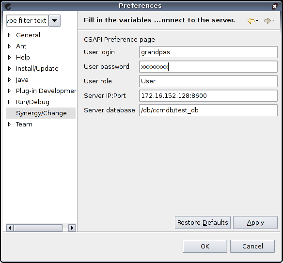

Setting preferences
The preference page
Before any action, you have to indicate to the plugin the user, role and
password to be used to connect. Also, some technical information are needed:
the location of your Synergy/Change server, and the path to the database
on server.
- The login is the identifier used to connect through the normal web
interface of Synergy/Change.
- Password is the password used when connecting through the normal web
interface of Synergy/Change.
- Role is the CS Role that is selected when you connect through the normal
web interface of Synergy/Change.
- The server IP and port of the server must be entered sepated by colons:
ip.ad.dr.ess:port for example. The default port is 8600.
- The path to the database on the server is partly written on the web interface
login page, but you probably will have to ask your local administrator for
this information.
